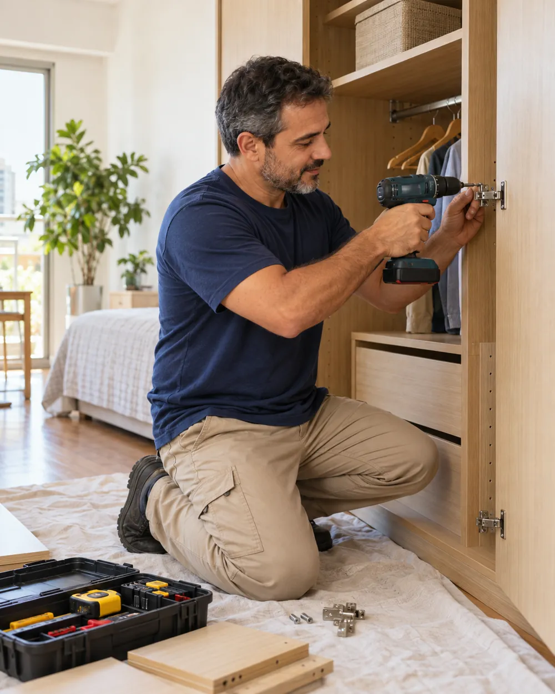
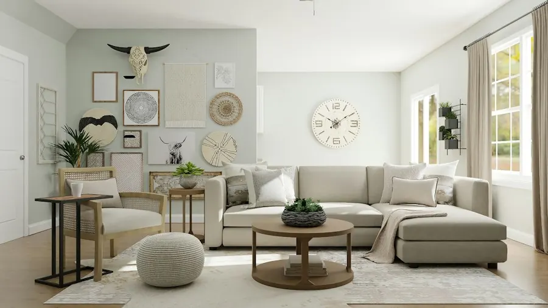
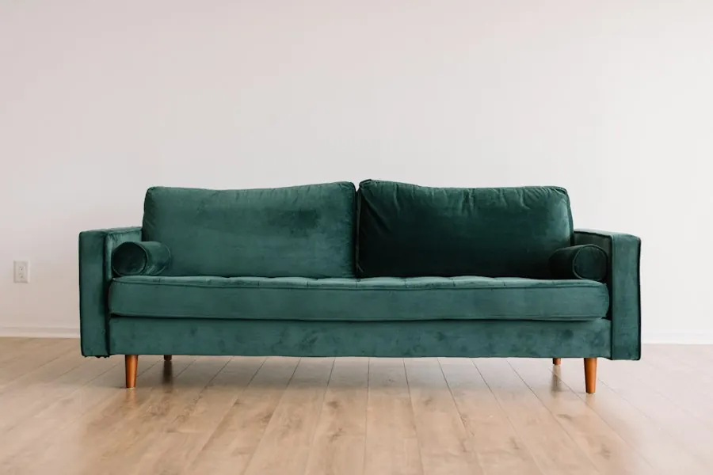

Guarda-roupas
e armários
Guarda-roupas, cômodas, sapateiras e armários comprados em loja ou pela internet.
Orçar montagemMontagem, desmontagem e remontagem de móveis com atenção a cada peça. Fale direto com quem vai cuidar do seu serviço.
Solicitar meu orçamento
Para renovar um ambiente ou organizar a mudança.
Conte qual móvel precisa de atenção.
Guarda-roupas, cômodas, sapateiras e armários comprados em loja ou pela internet.
Orçar montagemCamas, criados-mudos e outros móveis para deixar seu quarto pronto para usar.
Orçar montagemRacks, estantes, mesas, cadeiras e escrivaninhas para diferentes espaços da casa.
Orçar montagemVai mudar? Consulte a possibilidade de desmontar e montar seus móveis novamente.
Consultar serviçoUm atendimento próximo, da primeira mensagem à conferência final. Você conversa diretamente comigo para entender o serviço e combinar cada detalhe.
Paulo é um personagem criado para este exemplo de site.Modelo, quantidade de móveis e local do atendimento para preparar o orçamento.
Peças e ferramentas organizadas, com atenção ao móvel e ao ambiente.
Uma revisão ao final para verificar a montagem e conversar sobre os cuidados com o móvel.
Do quarto ao home office, a montagem
é o que dá forma ao seu espaço.


Fotos ilustrativas de ambientes. Não representam trabalhos realizados pelo profissional.
Informe o móvel, a quantidade e a região. Se tiver, mande o link do produto.
Os detalhes são avaliados na conversa, antes de combinar a execução.
Com o serviço alinhado, escolha uma data conforme a disponibilidade.
Preencha os detalhes para levar uma mensagem organizada ao WhatsApp.
Depois de abrir a conversa, envie fotos do móvel ou o manual em PDF pelo próprio WhatsApp.
Igrejinha · Três Coroas · Taquara · Parobé
Consulte disponibilidade e eventual custo de deslocamento.O orçamento depende do modelo, da quantidade de móveis, do tipo de serviço e da localização. Envie essas informações e, se possível, o link ou fotos do produto.
Sim. Após abrir a conversa pelo botão da página, anexe as fotos e o PDF diretamente no WhatsApp. Os arquivos não são enviados pelo formulário.
Esse serviço está incluído na proposta deste exemplo. Na contratação real, é necessário avaliar o estado do móvel, o modelo e as condições para desmontagem e remontagem.
Não. Valor, data, disponibilidade e condições do serviço são confirmados durante a conversa.